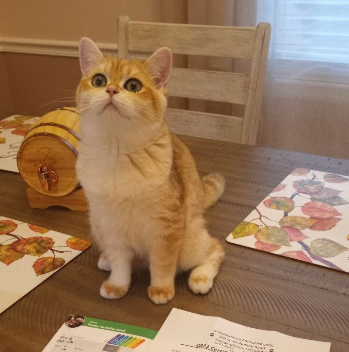
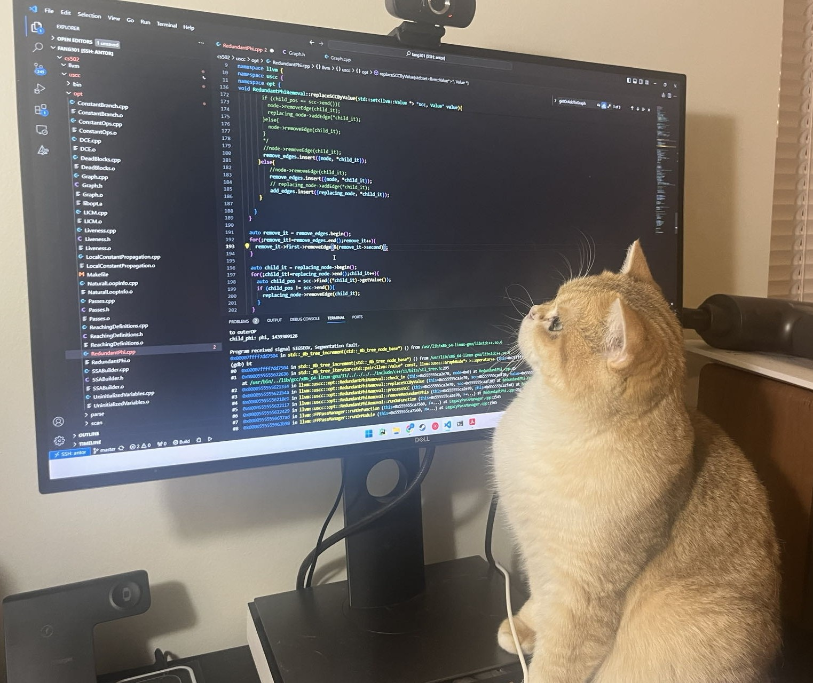
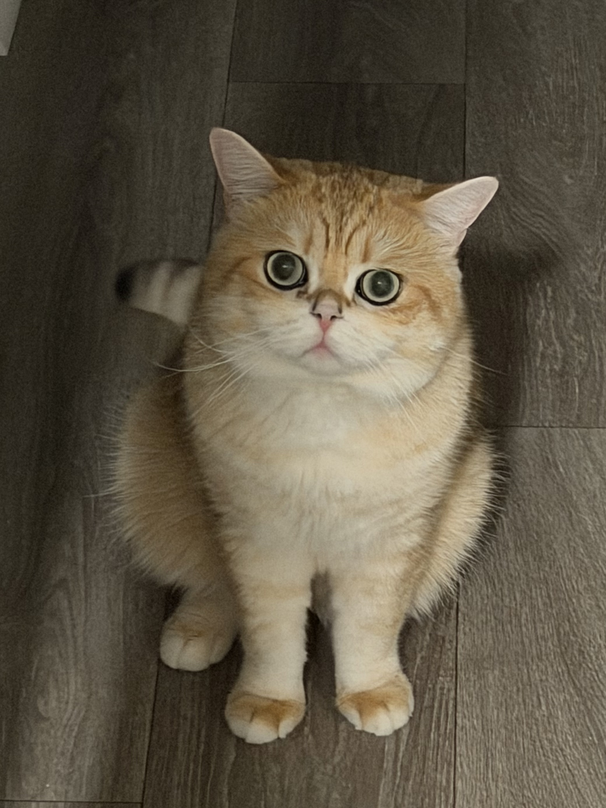
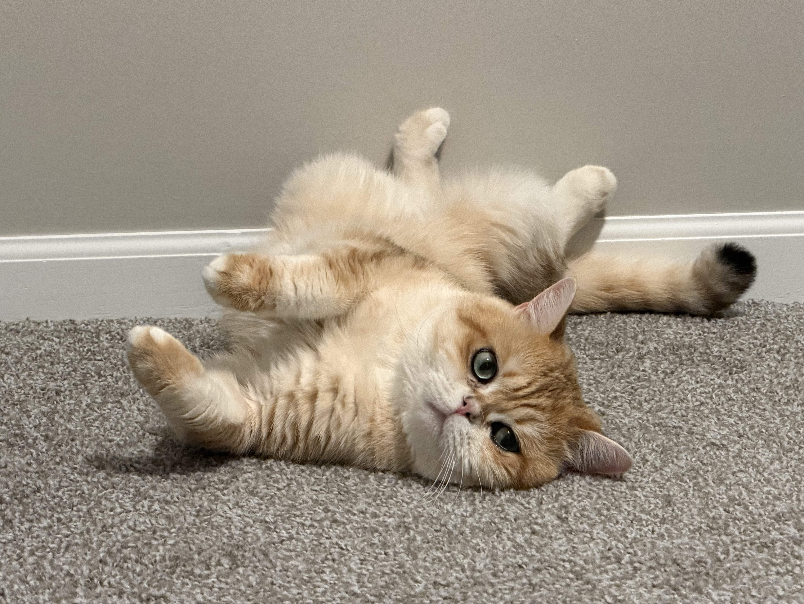
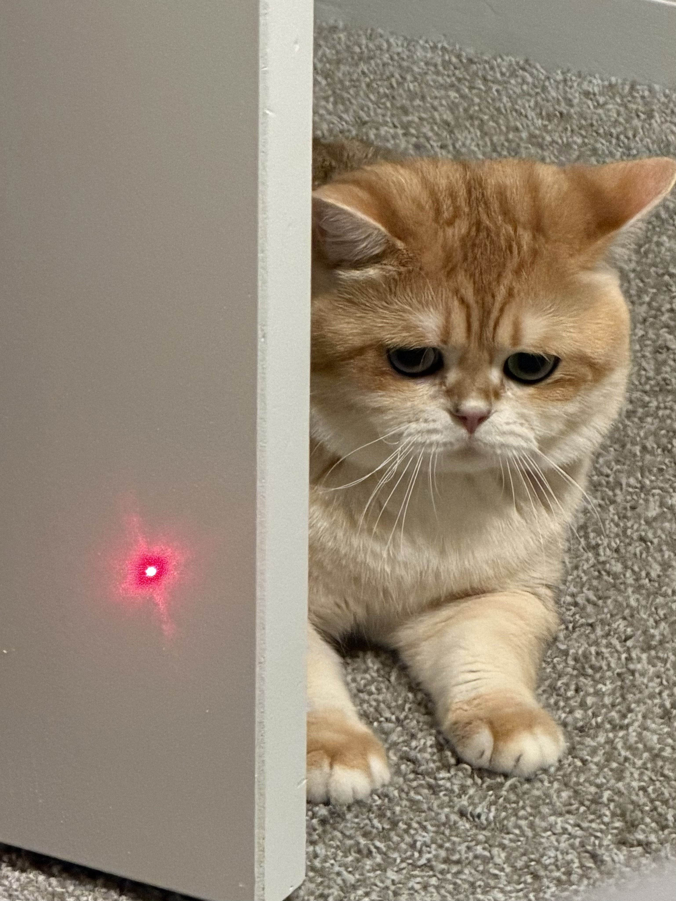

About Me
I am a Ph.D. candidate in Computer Science at Purdue University, advised by Dr. Changhee Jung. My research focuses on computer architecture, with an emphasis on designing high-performance and energy-efficient CPUs and GPUs, Large Language Model (LLM) acceleration, compiler-architecture co-design, and cache hierarchies.
Recognitions
- 2026-2027 Bilsland Dissertation Fellowship
- ISCA 2025 Best Paper Honorable Mention
Publications
- EMSOFT 2026
- IEEE Computer
- HPCA 2026
-
ISCA 2025
- HPCA 2025
- ICCAD 2024
Experience
-
May – Aug 2026
Computer Architecture Research Intern
-
May – Aug 2025
SoC Modeling Intern
Meow






Dax is a three-year-old British Shorthair who joined our family in the fall of 2023. He's also my dedicated late-night companion, faithfully helping me debug ideas and polish papers along the way.